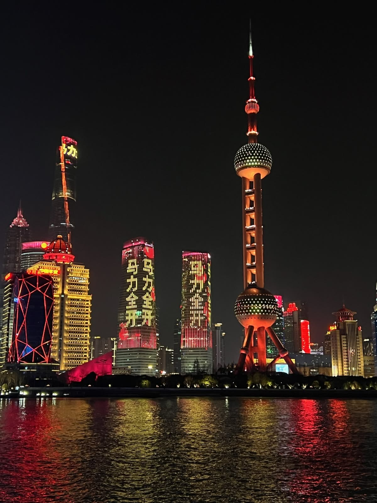
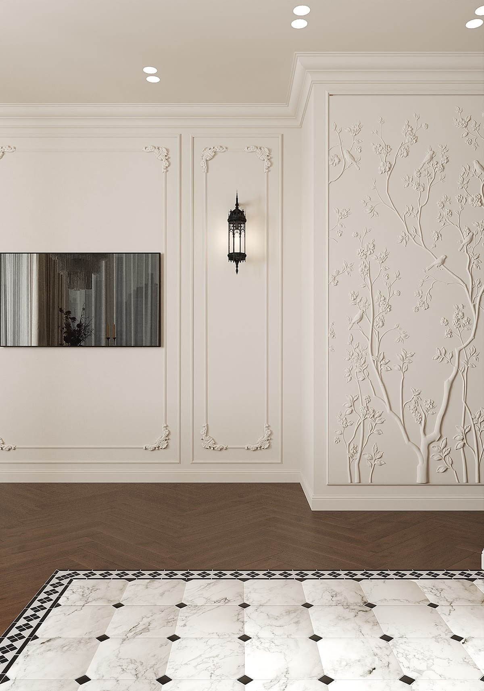
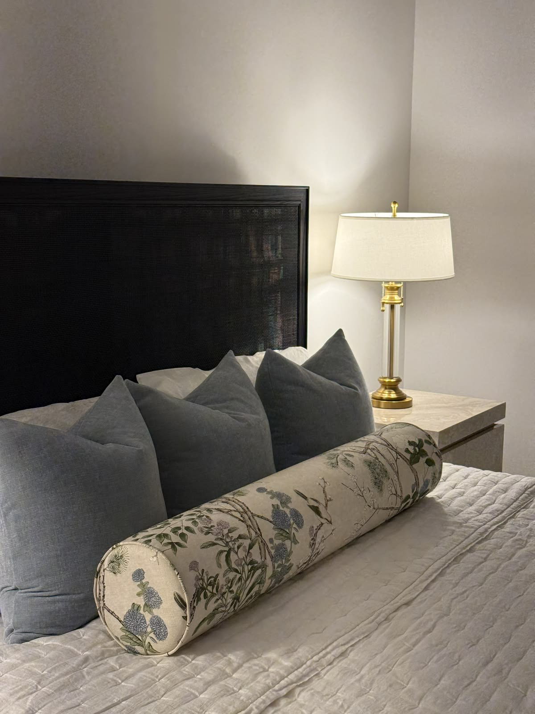
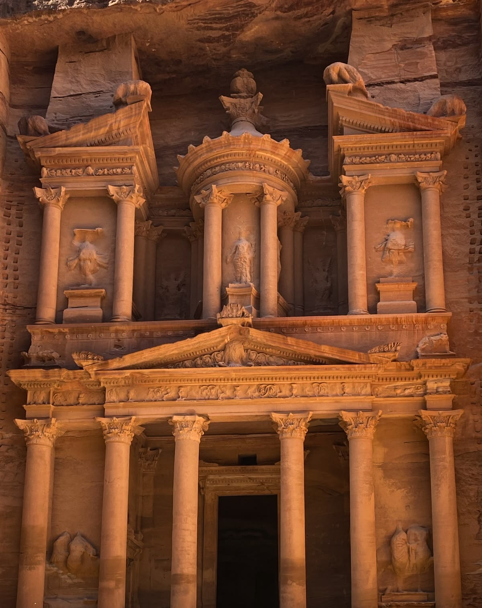
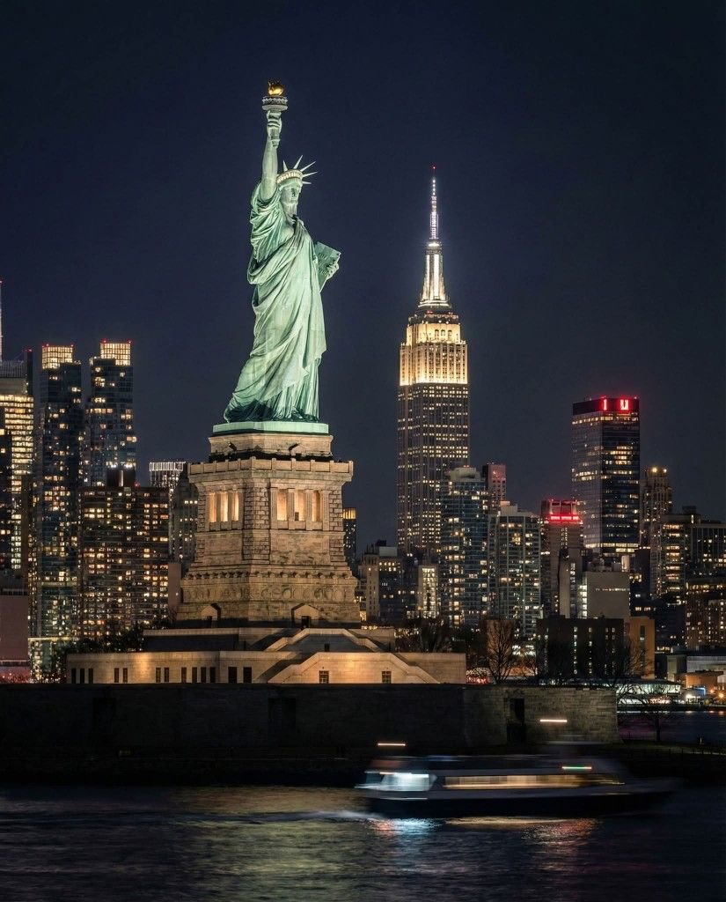
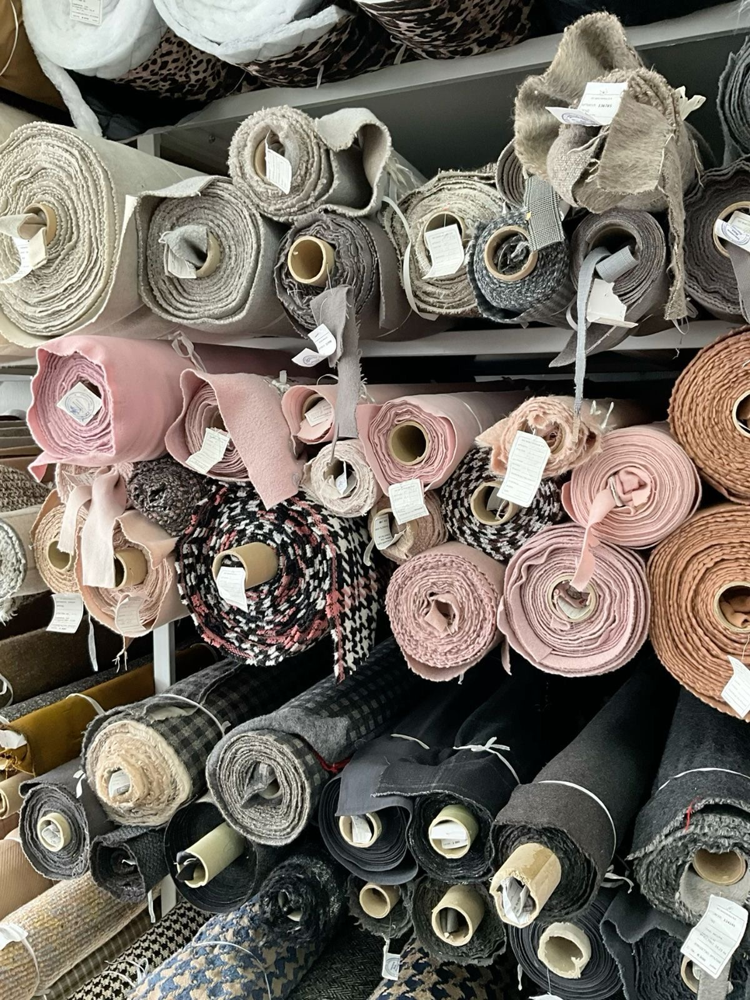

Китай

Китай - страна, которую я бы хотела посетить самой первой. Возможность ощутить себя в будущем, пошопиться и просто попасть туда без проблем, виз и головной боли.
#Путешествия
basita
Привет! Меня зовут Маргарита. Мне 17 лет и я ученица 3 курса группы ИС1-24 Владикавказского колледжа электроники. Я учусь на факультете "Информационные системы и программирование" и это мой первый сайт-визитка. Познакомимся поближе?)

Китай - страна, которую я бы хотела посетить самой первой. Возможность ощутить себя в будущем, пошопиться и просто попасть туда без проблем, виз и головной боли.
#Путешествия
Элегантная классика, романтика и искусство жить.Город, где кофе на террасе, вековая архитектура и атмосфера вдохновения важнее суеты. Здесь прошлое не просто хранят — им дышат и наслаждаются.
#Путешествия
Очень люблю неоклассику с французским акцентом.Мне нравится ощущение простора,высоты потолков, но с уютом. Это очень благородный и рошкошный стиль.
#Дизайн
Белоснежный дизайн выглядит чисто, дорого, аккуратно, но скучно. Поэтому я особенно люблю акцентные предметы в виде красивой посуды, текстиля, растений
#Дизайн
Гостеприимная пустыня, розовые скалы и библейская история.Страна, где находится чудо света Петра, можно искупаться в Мертвом море и почувствовать себя на Марсе в пустыне Вади-Рам. Очень спокойное и безопасное место на Ближнем Востоке с невероятным восточным колоритом.
#Путешествия
Cтрана грандиозных масштабов и контрастов. От неоновых мегаполисов и Голливуда до дикой природы каньонов. Плавильный котел культур, где соседствуют дух предпринимательства, поп-культура и невероятное разнообразие ландшафтов.
#Путешествия
Все, что связано с рукоделием, творчеством и идеями, — это я. Умею шить, вышивать, плести из бисера, рисовать, клеить и многое другое. Если нужно чему-то научиться, дайте мне пару дней, и я буду это уметь. В ближайшее время хочу научиться шить: начиная с косметичек, заканчивая одеждой.
#ХоббиНапиши мне, если хочешь обсудить дизайн или путешествия: